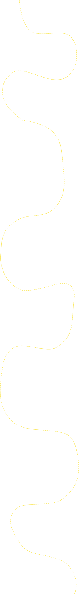
Raquel fue una de las primeras mujeres en aprender la técnica del bordado en los talleres de Macul con mujeres de distintas comunas de Santiago y luego se convirtió en una de las diez fundadoras del colectivo independiente en 1987.
En sus bordados veras la delicadeza de sus detalles, la variedad de puntadas y el uso de colores intensos, especialmente en sus montañas, bordadas con intensos colores.
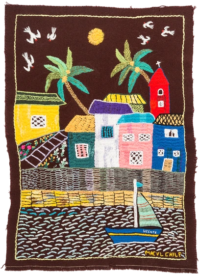
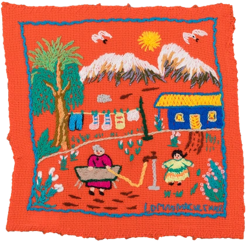
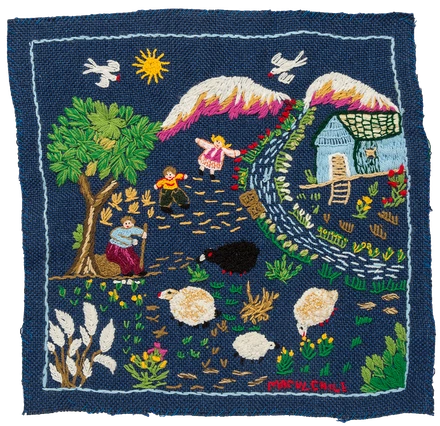
Nancy, al igual que Raquel, fue una de las primeras mujeres en aprender la técnica del bordado en los talleres de Macul y, posteriormente, una de las diez fundadoras del colectivo independiente en 1987.
También fue una de las primeras mujeres en aprender la técnica del bordado en los talleres de Macul y una de las diez fundadoras del colectivo independiente en 1987.
En sus bordados de colores vivos y composiciones imaginativas, se encuentra uno de sus rasgos más distintivos, siendo la representación de montañas separadas por un sol central.
“La señora María tiene harto colorido, le pone colores imaginarios”.
Gertrudis Urzúa, sobre los bordados de María Muñoz.
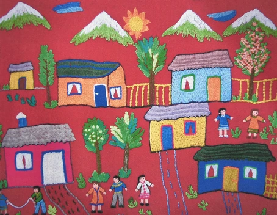
La última entre las 4 mujeres que empezaron a aprender la técnica del bordado en los talleres de Macul fue Leonor, quien también formo parte del colectivo creado en 1987.
En sus bordados es posible ver distintas temáticas, pero prefiere las escenas de niños jugando, las tradiciones chilenas y los motivos religiosos.
En 1987 recibió un premio de UNICEF por su bordado Nacimiento a la chilena, donde representó el nacimiento de Jesús.
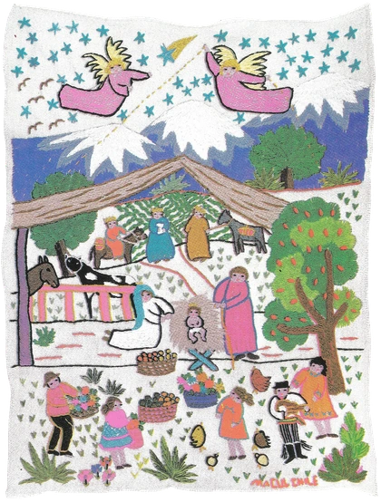
Bordado ganador de premio UNICEF.
“A mi mami le gustan todos los colores que sean encendidos”.
Juana Reyes sobre el trabajo de Leonor Soto.
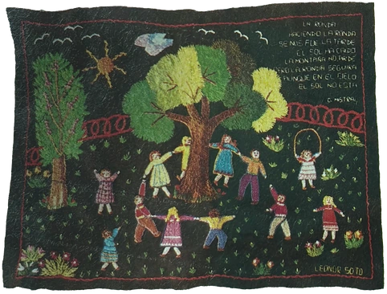
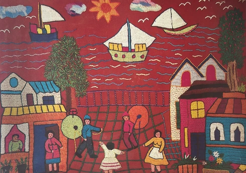
Hija de Leonor Soto, bordadora y fundadora del colectivo. Su trabajo se caracteriza por una diversidad temática, con especial interés en las representaciones religiosas, la naturaleza y las escenas construidas a partir de imágenes.
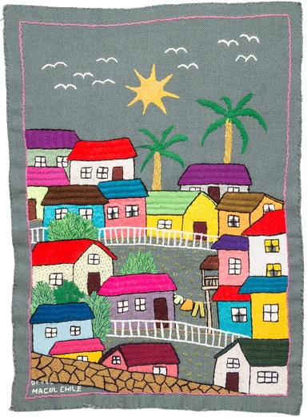
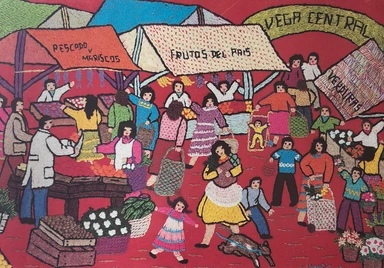
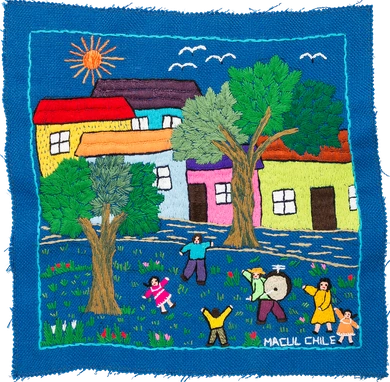
Catalina fue una de las principales impulsoras de la independencia de las Bordadoras Lomas de Macul en 1987 y es en una figura fundamental para la organización del colectivo. Fue presidenta de la agrupación y estuvo a cargo de administrar las ventas, registrar las obras y conservar documentos de su trayectoria. Además, su casa se convirtió en un espacio fundamental de reunión para las bordadoras.
Sus bordados representan paisajes urbanos, rurales, montañas y personajes típicos chilenos, utilizando colores vivos y contrastantes.
Una de las diez fundadoras de las Bordadoras Lomas de Macul en 1987. Durante su juventud estudió dos años de Bellas Artes, formación que se refleja en sus composiciones y su manejo de la perspectiva.
Sus bordados se inspiran principalmente en la vida rural chilena y oficios tradicionales. Prefiere trabajar temáticas con las que siente afinidad y lugares que conoce.
Además de su trabajo como bordadora, desempeña un papel importante en la gestión de ferias, exposiciones del colectivo y ventas.
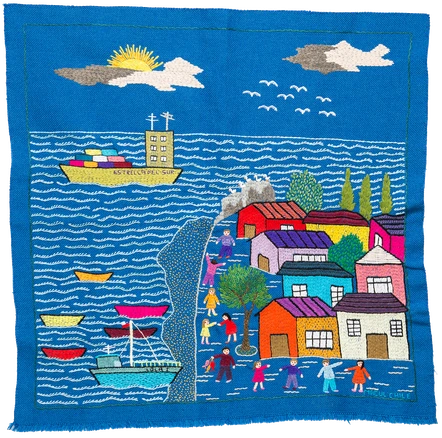
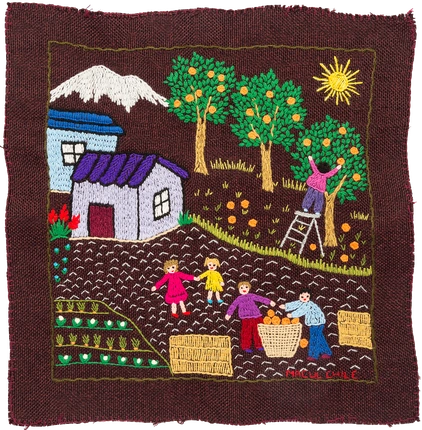
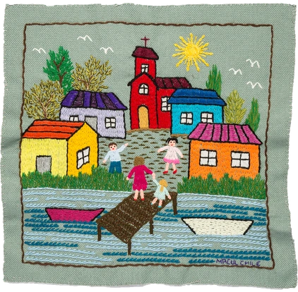
Perteneciente a las bordadoras Lomas de Macul, su trabajo se caracteriza por la representación de animales, escenas rurales, celebraciones y tradiciones, combinando elementos de la realidad con su imaginación.
En sus bordados alterna colores fuertes e intensos, con algunos más apagados. Además de crear sus propias obras, Gertrudis participa en el trabajo de sus compañeras realizando dibujos y compartiendo ideas.
“A mi me encanta el tema de los animales”.
Gertrudis Urzúa
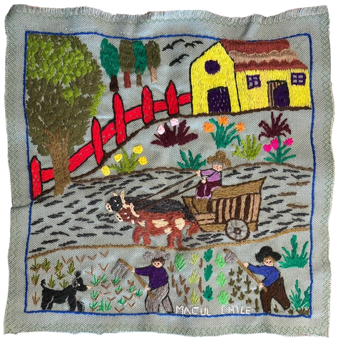
Miembro de las bordadoras Lomas de Macul. Su trabajo se caracteriza por la libertad creativa, los colores intensos y las composiciones imaginativas.
Para crear sus bordados utiliza fotografías, imágenes de revistas y su propia imaginación, representando paisajes y escenas familiares, muchas veces a partir de encargos.
“Ella tiene un colorido especial, todo lo que ves adornado con cosas extrañas es de ella”.
Gertrudis Urzúa, sobre María Duarte.
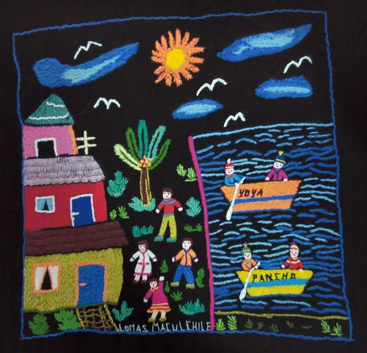
Miembro de las bordadoras Lomas de Macul e hija de María Duarte.
Su trabajo destaca especialmente por el movimiento de los personajes, la expresividad de los animales y sus representaciones de celebraciones, escenas festivas y navideñas.
“Yo hago tapiz de todos los colores, pero el que más me gusta es el negro, encuentro que resalta mejor, todos los colores...”
Rosa Miranda
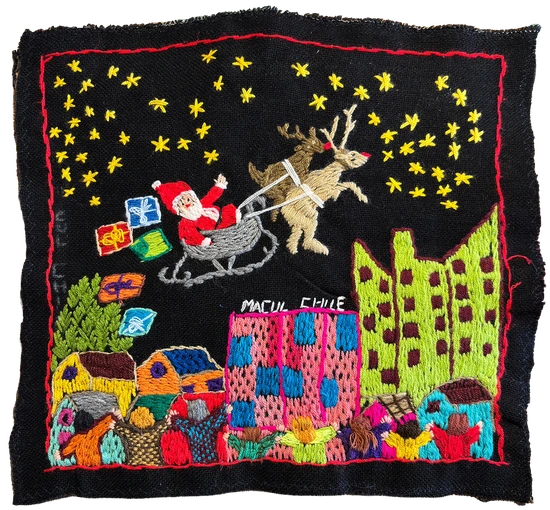
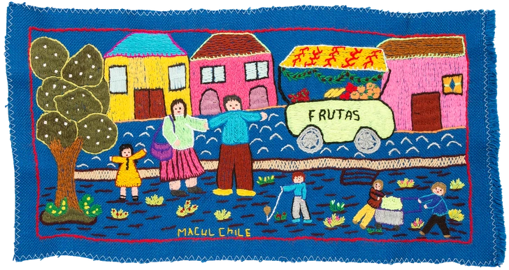
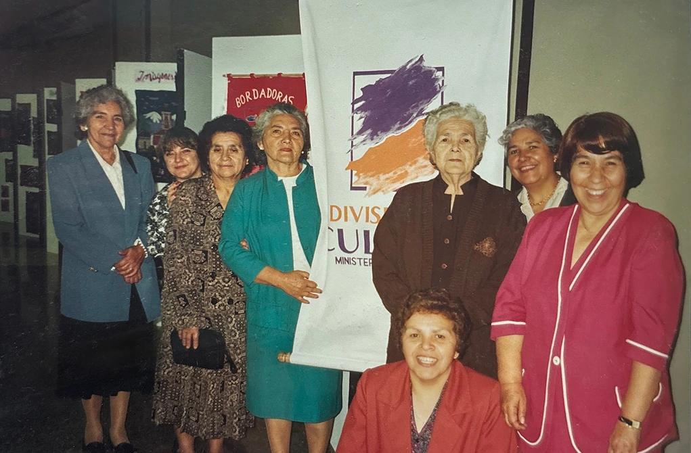
Bordadoras Lomas de Macul.
exposicionesFEBRERO 1993
IV Feria Nacional de Artesanía Tradicional, afueras del Museo de Arte y Artesanía de Linares.
DICIEMBRE 1994
Exposición en la Municipalidad de Macul.
OCTUBRE 1995
Exposición en el Ministerio de Educación de Chile por el “Dia del profesor”.
ABRIL 1996
XIV Feria Internacional de Artesanías, Predio Ferial Córdova.
JUNIO 1996
Exposición en el Instituto Británico.
AGOSTO 1996
Primer Encuentro de Artesanía Tradicional Chilena en el Museo Histórico Nacional de Chile.
SEPTIEMBRE 1997
Muestra en Liceo “Mercedes Marín del Solar”.
OCTUBRE-DICIEMBRE 2007
“Arpilleristas y Bordadoras de la Región Metropolitana” por el Museo de Arte Popular Americano Tomas Lago de la Universidad de Chile.